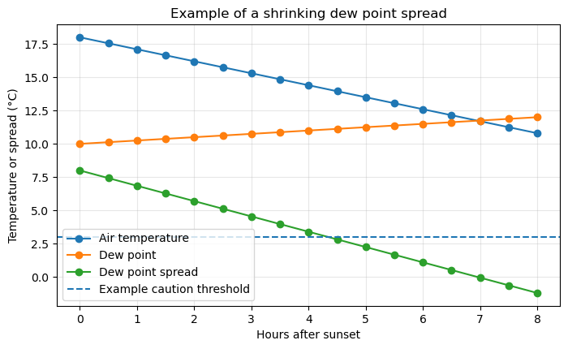
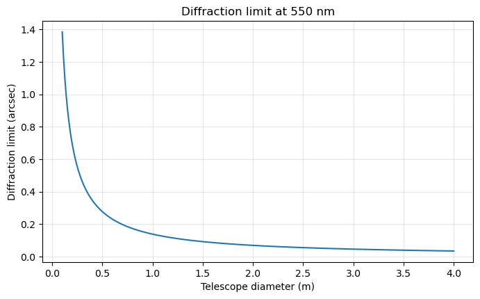
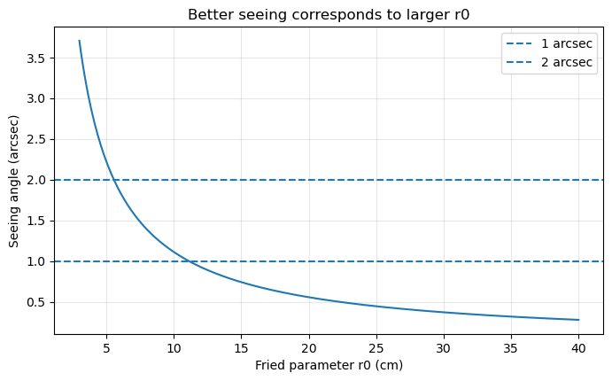

12. Watching the Weather for Observing#
Good observing requires more than a clear forecast. A night can begin with clouds and later become useful, or it can begin clear and become unsafe as humidity rises, wind increases, or dew forms on the telescope. Learning to watch the weather is part of learning how to observe responsibly.
This page has two goals. The first is practical: how to decide whether conditions are safe and useful for observing. The second is physical: how seeing and diffraction limit the sharpness of astronomical images.
Key idea
Forecasts help you plan. Local sensors help you decide. Images from the telescope help you verify.
12.1. Weather Forecasts and Real Conditions#
Before an observing night, check several kinds of information:
cloud cover,
precipitation risk,
wind speed and gusts,
relative humidity,
dew point,
temperature trend,
pressure trend,
smoke, haze, or dust,
seeing forecasts if available,
satellite or radar loops.
A forecast tells you what may happen over a broad area. A telescope, however, sits at one specific location. Conditions at that location can differ from the forecast, especially near sunset, near mountains, near coastlines, or during rapidly changing weather.
For serious observing, do not make the decision from a single weather app. Compare at least one general forecast, one astronomy-specific forecast, and local site measurements.
12.2. Useful Weather Resources#
The resources below are not interchangeable. Each one answers a different kind of question.
Resource |
What it is useful for |
What to check |
|---|---|---|
Local forecast, hourly weather, alerts, wind, humidity, dew point, precipitation |
Is there precipitation, lightning, high wind, fog, or dangerous weather nearby? |
|
Satellite loops for clouds and storm development |
Are clouds moving toward the site, away from the site, forming locally, or dissipating? |
|
Global satellite imagery, smoke, dust, aerosols, large-scale cloud structure |
Is there smoke, haze, dust, or a regional cloud pattern affecting transparency? |
|
Astronomy-focused cloud, transparency, and seeing forecasts |
Is the astronomical forecast consistent with the general weather forecast? |
|
Seeing, cloud layers, jet stream, humidity, and astronomy-specific conditions |
Are seeing and cloud-layer predictions acceptable for the project? |
|
Hourly cloud layers, darkness, Moon, humidity, and observing forecast |
Are low, medium, or high cloud layers expected during the observing window? |
Practical advice
Do not only check whether the forecast says “clear.” For observing, a better question is: clear, dry, stable, safe, and clear enough for this science goal?
12.3. Clouds After Sunset#
Not all clouds behave the same way.
Some clouds are driven by daytime heating. For example, fair-weather cumulus clouds can form as the ground warms during the afternoon. After sunset, the surface cools, convection weakens, and these clouds may dissipate. In that case, a partly cloudy afternoon does not always mean the night will be unusable.
Other clouds are less likely to disappear quickly. High cirrus clouds can persist through the night. Low stratus clouds or fog may form or thicken after sunset, especially when the temperature approaches the dew point. Storm clouds, rain clouds, or rapidly growing clouds are warning signs that observing should not begin.
Thin clouds can also be misleading. A night may look clear enough by eye but still be poor for photometry because thin cirrus changes the amount of light reaching the telescope. This is especially important if you are trying to measure precise brightness changes.

Fig. 12.1 Cloud type matters for observing. Fair-weather cumulus may fade after sunset, while cirrus, stratus, fog, or storm-related clouds can remain a serious problem for transparency and safety. Source: Wikimedia Commons, Cloud types.svg.#
{kind=link}
12.4. Transparency, Clouds, Smoke, and Haze#
Two different ideas often get mixed together:
Transparency describes how much light gets through the atmosphere.
Seeing describes how much the atmosphere blurs the image.
A night with excellent transparency has dark, clear skies with little cloud, haze, smoke, or dust. This is good for detecting faint objects and for measuring reliable brightness changes.
A night with excellent seeing has steady air and small, sharp stellar images. This is good for resolving fine detail and obtaining precise photometry.
These do not always occur together. A night can be very transparent but have poor seeing. A night can also have steady seeing but poor transparency because of thin clouds or haze.
Photometry warning
Thin cirrus can be worse than it looks. Your eye may see stars, but a CCD light curve may show changing extinction as the cloud layer moves across the field.
12.5. Humidity, Dew, and Telescope Safety#
Humidity is one of the most important weather variables for observing.
As the air cools during the night, the temperature may approach the dew point. When the temperature and dew point become close, water can condense on exposed surfaces. This can fog optics, damage equipment, reduce image quality, or force the telescope to close.
A useful quantity is the dew point spread:
where \(T\) is the air temperature and \(T_{\rm dew}\) is the dew point. A small dew point spread means the air is close to saturation. If the spread continues to shrink during the night, conditions may become unsafe even if the sky is currently clear.
High humidity can also be associated with poorer transparency, fog, frost, or condensation inside the dome or enclosure.
Practical warning
A clear sky is not enough. If humidity is high, the dew point spread is small, or condensation is forming on surfaces, the telescope may need to close even if there are no clouds.
12.6. Code Example: Dew Point Spread During the Night#
The exact safety limits depend on the observatory and instrument. The example below is not a replacement for a site rule. It shows how to think about the trend.
The dangerous pattern is not only “humidity is high.” A more useful pattern is:
temperature is falling,
dew point is steady or rising,
the dew point spread is shrinking,
condensation is starting to appear on exposed surfaces.
import numpy as np
import matplotlib.pyplot as plt
# Example time axis in local hours after sunset.
hours_after_sunset = np.linspace(0, 8, 17)
# Synthetic weather trend for demonstration.
temperature_c = 18 - 0.9*hours_after_sunset
dew_point_c = 10 + 0.25*hours_after_sunset
dew_point_spread_c = temperature_c - dew_point_c
fig, ax = plt.subplots(figsize=(8, 4.5))
ax.plot(hours_after_sunset, temperature_c, marker="o", label="Air temperature")
ax.plot(hours_after_sunset, dew_point_c, marker="o", label="Dew point")
ax.plot(hours_after_sunset, dew_point_spread_c, marker="o", label="Dew point spread")
ax.axhline(3, linestyle="--", linewidth=1.5, label="Example caution threshold")
ax.set_xlabel("Hours after sunset")
ax.set_ylabel("Temperature or spread (°C)")
ax.set_title("Example of a shrinking dew point spread")
ax.legend()
ax.grid(True, alpha=0.3)
plt.show()

In a research log, this kind of plot should be paired with notes about what you actually saw at the telescope. For example: Did the guide star FWHM increase? Did the sky background change? Did condensation appear on the tube, cables, dome slit, or nearby metal surfaces?
The plot is not the decision by itself. It is a way to organize the evidence.
12.7. Optional Code: Estimating Dew Point from Temperature and Humidity#
A local weather station should ideally report dew point directly. If it only reports temperature and relative humidity, you can estimate dew point using an approximate formula.
This example uses temperature in Celsius. It is meant for quick planning and visualization, not for writing observatory safety software.
import numpy as np
def dewpoint_celsius(temp_c, rh_percent):
# Estimate dew point in Celsius from air temperature and relative humidity.
a = 17.625
b = 243.04
rh = np.clip(rh_percent, 1, 100) / 100
gamma = np.log(rh) + (a * temp_c) / (b + temp_c)
return (b * gamma) / (a - gamma)
temp_c = 12.0 # air temperature in degrees Celsius
rh_percent = 85.0 # relative humidity in percent
dew_c = dewpoint_celsius(temp_c, rh_percent)
spread_c = temp_c - dew_c
print(f"Air temperature: {temp_c:.1f} °C")
print(f"Relative humidity: {rh_percent:.0f}%")
print(f"Estimated dew point: {dew_c:.1f} °C")
print(f"Dew point spread: {spread_c:.1f} °C")
Air temperature: 12.0 °C
Relative humidity: 85%
Estimated dew point: 9.6 °C
Dew point spread: 2.4 °C
12.8. Wind and Changing Conditions#
Wind affects both safety and image quality.
Strong winds can shake the telescope, broaden stellar images, make guiding worse, and increase the risk of damage. Gusts are often more important than the average wind speed because a sudden gust can move the telescope or dome unexpectedly.
Wind direction also matters. A site may be protected from one direction but exposed from another. Wind blowing over warm buildings, pavement, trees, or dome structures can create local turbulence that worsens image quality.
A night with light, steady wind can be excellent. A night with strong gusts, rapidly changing wind direction, or wind-driven dust may be unusable.
Safety rule
Always follow the local telescope operating limits. If the observatory has a wind, humidity, precipitation, or lightning closure rule, that rule overrides your observing plan.
12.9. Why a Local Weather Station Matters#
A local weather station is essential because observing decisions depend on the conditions at the telescope, not just the regional forecast.
A useful observing-site weather station should measure:
air temperature,
relative humidity,
dew point,
wind speed,
wind gusts,
wind direction,
pressure,
rainfall or precipitation,
sky temperature or cloud sensor data if available.
Additional tools can also help:
an all-sky camera,
satellite cloud loops,
radar,
lightning maps,
a seeing monitor,
a sky brightness meter,
a dome or enclosure sensor,
temperature sensors inside and outside the telescope structure.
The most important part is not just the current value. The trend matters. Rising humidity, falling temperature, increasing wind gusts, or a shrinking dew point spread can turn a usable night into an unsafe one.
A local weather station helps answer questions such as:
Is the humidity rising or falling?
Is the temperature approaching the dew point?
Are wind gusts increasing?
Are clouds forming locally?
Is rain nearby even if it is not currently raining?
Are conditions improving after sunset or getting worse?
For remote or semi-automated observing, these measurements become even more important. The telescope should not depend only on a human looking outside.
12.10. A Basic Observing-Weather Checklist#
Before opening the telescope, ask:
Is there any precipitation nearby?
Is lightning possible?
Are wind speeds and gusts within the safe operating range?
Is the humidity below the site safety limit?
Is the temperature safely above the dew point?
Are clouds decreasing, stable, or increasing?
Is the sky transparent enough for the science goal?
Are seeing conditions good enough for the science goal?
Are local sensors consistent with the forecast?
Are conditions expected to remain safe long enough to observe?
During the night, keep checking:
humidity,
dew point spread,
wind gusts,
cloud cover,
image quality,
guiding quality,
stellar FWHM,
sky background.
Observing is not a one-time decision. It is a continuous decision made throughout the night.
12.11. What to Record in an Observing-Weather Log#
A weather note should be specific enough that you can understand later why you opened, waited, or closed.
## Observing-weather log
Date:
- 2026-07-15
Site:
- KPNO 0.9m
Before opening:
- Forecast checked:
- Satellite loop checked:
- Radar checked:
- Local weather station checked:
- All-sky camera checked:
Current conditions:
- Temperature:
- Dew point:
- Dew point spread:
- Relative humidity:
- Wind speed:
- Wind gust:
- Cloud estimate:
- Transparency estimate:
- Seeing estimate or FWHM:
Decision:
- Open / wait / close
Reason:
- Conditions are safe and improving.
- Conditions are unsafe because humidity is rising and dew point spread is small.
- Conditions are scientifically poor because thin clouds are crossing the field.
Next check:
- Reassess in 20 minutes.
The most common beginner mistake is to write “weather was fine” without recording the evidence. A useful observing log should explain the decision.
12.12. Seeing and Diffraction#
Image sharpness is limited by several effects. Two of the most important are atmospheric seeing and diffraction.
Diffraction is a fundamental limit caused by the wave nature of light. Seeing is caused by turbulence in Earth’s atmosphere. For most ground-based telescopes, seeing is usually the dominant limitation.

Fig. 12.2 A circular telescope aperture produces an Airy pattern rather than a perfect point. The bright central spot and surrounding rings are the diffraction pattern of a point source. Source: Wikimedia Commons, Airy disk D65.png.#
{kind=link}
12.13. Diffraction Limit#
Even a perfect telescope cannot focus light into an infinitely small point. Because light behaves as a wave, a circular telescope aperture produces an Airy pattern: a bright central spot surrounded by faint rings.
The angular size of the central diffraction pattern is approximately
where
\(\theta_{\rm diff}\) is the angular resolution in radians,
\(\lambda\) is the wavelength of light,
\(D\) is the telescope diameter.
Converting to arcseconds gives
This means that larger telescopes have smaller diffraction limits. At visible wavelengths, a 1-meter telescope has a diffraction limit of roughly \(0.14''\). A 0.5-meter telescope has a diffraction limit of roughly \(0.28''\).
In space, diffraction can be the main limit because there is no atmosphere. On the ground, the atmosphere usually blurs the image more than diffraction does.
12.14. Code Example: Diffraction Limit versus Telescope Diameter#
This example shows why a larger telescope has a smaller diffraction limit. The calculation assumes visible light with wavelength \(\lambda = 550\,{\rm nm}\).
import numpy as np
import matplotlib.pyplot as plt
wavelength_m = 550e-9 # wavelength in meters
diameter_m = np.linspace(0.1, 4.0, 300) # telescope diameter in meters
theta_rad = 1.22 * wavelength_m / diameter_m # diffraction limit in radians
theta_arcsec = theta_rad * 206265 # convert radians to arcseconds
fig, ax = plt.subplots(figsize=(8, 4.5))
ax.plot(diameter_m, theta_arcsec)
ax.set_xlabel("Telescope diameter (m)")
ax.set_ylabel("Diffraction limit (arcsec)")
ax.set_title("Diffraction limit at 550 nm")
ax.grid(True, alpha=0.3)
plt.show()

For ordinary ground-based imaging, the plotted diffraction limit is often much smaller than the actual observed stellar FWHM. That difference is usually caused by atmospheric seeing, tracking, focus, wind shake, thermal effects, or a combination of these.
12.15. Atmospheric Seeing#
Atmospheric seeing is caused by turbulent air with changing temperature and density. These variations change the index of refraction of the air. As starlight passes through the atmosphere, the wavefront becomes distorted.
Instead of forming a tiny diffraction-limited image, a star becomes a blurred, moving spot. Long exposures average over this motion and produce a broadened stellar image.
Seeing is often measured using the full width at half maximum, or FWHM, of stellar images. A smaller FWHM means sharper images.
Typical seeing values might be:
excellent: less than \(1''\),
moderate: \(1''\) to \(2''\),
poor: greater than \(2''\).
These values depend strongly on the site, weather, telescope environment, and altitude above the horizon.
12.16. The Fried Parameter#
A useful way to describe seeing is with the Fried parameter, usually written \(r_0\). This is the approximate diameter of a patch of atmosphere over which the wavefront remains fairly coherent.
The seeing angle is approximately
A larger \(r_0\) means better seeing. A smaller \(r_0\) means stronger atmospheric distortion.
For example, if \(r_0\) is small compared with the telescope diameter, then the telescope is not operating at its diffraction limit. Instead, the image is broken into many turbulent patches and the final image is seeing-limited.
This is why a larger telescope does not automatically produce sharper images from the ground. If the seeing is \(2''\), then both a small telescope and a large telescope may produce stellar images that are much broader than their diffraction limits.
12.17. Code Example: Seeing versus Fried Parameter#
This example converts Fried parameter \(r_0\) into an approximate seeing angle at \(\lambda = 550\,{\rm nm}\).
import numpy as np
import matplotlib.pyplot as plt
wavelength_m = 550e-9 # wavelength in meters
r0_cm = np.linspace(3, 40, 300) # Fried parameter in centimeters
r0_m = r0_cm / 100
seeing_rad = 0.98 * wavelength_m / r0_m
seeing_arcsec = seeing_rad * 206265
fig, ax = plt.subplots(figsize=(8, 4.5))
ax.plot(r0_cm, seeing_arcsec)
ax.axhline(1, linestyle="--", linewidth=1.5, label="1 arcsec")
ax.axhline(2, linestyle="--", linewidth=1.5, label="2 arcsec")
ax.set_xlabel("Fried parameter r0 (cm)")
ax.set_ylabel("Seeing angle (arcsec)")
ax.set_title("Better seeing corresponds to larger r0")
ax.legend()
ax.grid(True, alpha=0.3)
plt.show()

12.18. Seeing-Limited versus Diffraction-Limited Observing#
A telescope is diffraction-limited when the image sharpness is set mainly by the telescope aperture and the wavelength of light.
A telescope is seeing-limited when the image sharpness is set mainly by atmospheric turbulence.
For most ordinary ground-based imaging without adaptive optics,
In that case, the atmosphere dominates.
The observed image size can be thought of approximately as a combination of several blurring effects:
This is only an approximate way to think about the problem, but it is useful. Poor tracking, poor focus, wind shake, dome turbulence, and bad seeing can all broaden the final stellar image.
12.19. What Makes Seeing Worse?#
Seeing can become worse when there is strong turbulence along the line of sight. Common causes include:
strong upper-level winds,
jet stream overhead,
rapidly changing temperatures,
warm ground releasing heat after sunset,
wind blowing over buildings or rough terrain,
telescope or dome warmer than the outside air,
observing too low above the horizon,
unstable air after a weather front,
local heat sources near the telescope.
Some seeing problems are atmospheric. Others are local. A telescope looking over a warm roof or parking lot can have poor seeing even when the larger atmosphere is stable.
Local seeing
Bad seeing is not always caused by the upper atmosphere. Heat from a building, dome floor, telescope mirror, road, or nearby equipment can blur images before the light even reaches the telescope optics.
12.20. What Makes Seeing Better?#
Seeing often improves when the air is stable and temperature gradients are small.
Good seeing is more likely when:
winds are light or steady,
the telescope and dome are close to ambient temperature,
the target is high above the horizon,
the ground is not releasing strong heat,
there are no nearby heat sources,
the atmosphere is stable,
the jet stream is weak or displaced from the site.
The best seeing often occurs when the telescope, dome, and surrounding air have reached thermal equilibrium. This is why opening the dome early, cooling the telescope, and avoiding local heat sources can matter.
12.21. Seeing and Airmass#
Seeing usually gets worse when observing targets close to the horizon. At low altitude, starlight passes through more atmosphere. This increases extinction, refraction, and turbulence along the line of sight.
A target near the zenith passes through the least atmosphere. A target near the horizon passes through much more.
This is one reason observing plans often prioritize targets when they are high in the sky.
Observing rule
If two targets are equally important, observe the one that is higher in the sky first. High-altitude targets usually have lower airmass, less extinction, and better image quality.
12.22. Seeing and Photometry#
For photometry, seeing matters because it changes the shape and size of the stellar image.
If seeing gets worse, the star’s light spreads over more pixels. This can affect:
aperture size,
sky background contribution,
signal-to-noise ratio,
blending with nearby stars,
guiding quality,
differential photometry precision.
For time-series photometry, changes in seeing during the night can introduce trends or scatter in the light curve. This is especially important for transits, eclipses, and other events where small brightness changes matter.
Good photometry does not always require perfect seeing, but it does require stable and well-understood observing conditions.
12.23. Code Example: A Simple Observing-Condition Flag#
This example is intentionally simple. Real observatories use site-specific safety rules. The goal here is to show how multiple conditions can be combined into a first-pass decision.
def observing_condition_flag(cloud_fraction, humidity_percent, wind_gust_mph, dew_point_spread_c, seeing_arcsec):
# Return a simple text flag for observing conditions.
if cloud_fraction > 0.8:
return "Do not open: too cloudy"
if humidity_percent > 90:
return "Do not open: humidity too high"
if wind_gust_mph > 35:
return "Do not open: wind gusts too strong"
if dew_point_spread_c < 3:
return "Caution: dew point spread is small"
if seeing_arcsec > 3:
return "Science caution: seeing is poor"
return "Conditions may be usable, but keep monitoring"
cloud_fraction = 0.25 # fraction of sky covered by cloud
humidity_percent = 78 # relative humidity
wind_gust_mph = 18 # maximum recent wind gust
dew_point_spread_c = 5.5 # air temperature minus dew point
seeing_arcsec = 1.8 # approximate stellar FWHM or forecast seeing
flag = observing_condition_flag(cloud_fraction, humidity_percent, wind_gust_mph, dew_point_spread_c, seeing_arcsec)
print(flag)
Conditions may be usable, but keep monitoring
This kind of code is useful for teaching, but it should not be used as automated telescope-control software. A real closure system needs tested sensors, site-specific thresholds, failure handling, and conservative rules.
12.24. Putting It Together#
A good observing decision combines weather, safety, and image-quality information.
Clear skies are necessary, but they are not sufficient. You also need safe humidity, safe wind, acceptable transparency, and seeing that matches the science goal.
During an observing night, keep comparing three things:
what the forecast predicted,
what the local weather station reports,
what the images actually look like.
That comparison is how you learn to judge observing conditions like an observer rather than just a weather app user.
12.25. Checkpoint Questions#
Why is a clear sky not always enough to open a telescope?
Why can fair-weather cumulus clouds disappear after sunset?
Why can thin cirrus be a problem for photometry?
What does a shrinking dew point spread tell you?
Why is a local weather station better than relying only on a regional forecast?
What is the difference between transparency and seeing?
Why does a larger telescope not always produce sharper images from the ground?
What does the Fried parameter \(r_0\) describe?
Why do targets near the horizon usually have worse image quality?
What weather and image-quality quantities should be recorded in an observing log?